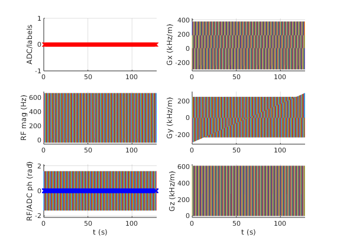

Contents
% Set system limits lims = mr.opts('MaxGrad',32,'GradUnit','mT/m',... 'MaxSlew',130,'SlewUnit','T/m/s',... 'rfRingdownTime', 30e-6, 'rfDeadtime', 100e-6); seq=mr.Sequence(lims); % Create a new sequence object fov=220e-3; Nx=256; Ny=256; % Define FOV and resolution foe=200e-3; % Field of excitation targetWidth=22.5e-3; % Diameter of target excitation pattern n=8; % Number of spiral turns T=8e-3; % Pulse duration % Define spiral k-space trajectory kMax=(2*n)/foe/2; % Units of 1/m (not rad/m) tk=0:seq.gradRasterTime:T-seq.gradRasterTime; kx=kMax*(1-tk/T).*cos(2*pi*n*tk/T); ky=kMax*(1-tk/T).*sin(2*pi*n*tk/T); % Define RF pulse tr=0:seq.rfRasterTime:T-seq.rfRasterTime; kxRf=interp1(tk,kx,tr,'linear','extrap'); kyRf=interp1(tk,ky,tr,'linear','extrap'); beta=2*pi*kMax*targetWidth/2/sqrt(2); % Gaussian width in k-space signal0 = exp(-beta.^2.*(1-tr/T).^2).*sqrt((2*pi*n*(1-tr/T)).^2+1); signal = signal0.*(1 + exp(-1j.*2*pi*5e-2*(kxRf + kyRf))); % Add gradient ramps [kx,ky,signal]=mr.addRamps({kx,ky},'rf',signal); rf = mr.makeArbitraryRf(signal,20*pi/180,'system',lims); gxRf = mr.makeArbitraryGrad('x',mr.traj2grad(kx)); gyRf = mr.makeArbitraryGrad('y',mr.traj2grad(ky)); % Define other gradients and ADC events deltak=1/fov; gx = mr.makeTrapezoid('x','FlatArea',Nx*deltak,'FlatTime',6.4e-3); adc = mr.makeAdc(Nx,'Duration',gx.flatTime,'Delay',gx.riseTime); gxPre = mr.makeTrapezoid('x','Area',-gx.area/2,'Duration',2e-3); phaseAreas = ((0:Ny-1)-Ny/2)*deltak; % Refocusing pulse and spoiling gradients %[rf180, gz] = mr.makeBlockPulse(pi,'Duration',1e-3,'SliceThickness',5e-3); [rf180, gz] = mr.makeSincPulse(pi,'system',lims,'Duration',3e-3,... 'SliceThickness',5e-3,'apodization',0.5,'timeBwProduct',4); gzSpoil = mr.makeTrapezoid('z','Area',gx.area,'Duration',2e-3);
Calculate timing (TE=20ms, TR=500ms)
delayTE1=ceil((20e-3/2 - mr.calcDuration(gzSpoil) - mr.calcDuration(rf180)/2)/seq.gradRasterTime)*seq.gradRasterTime; delayTE2=delayTE1 - mr.calcDuration(gxPre) - mr.calcDuration(gx)/2; delayTR=500e-3 - 20e-3 - mr.calcDuration(rf) - mr.calcDuration(gx)/2;
Loop over phase encodes and define sequence blocks
for i=1:Ny seq.addBlock(rf,gxRf,gyRf); seq.addBlock(mr.makeDelay(delayTE1)); seq.addBlock(gzSpoil); seq.addBlock(rf180,gz); seq.addBlock(gzSpoil); seq.addBlock(mr.makeDelay(delayTE2)); gyPre = mr.makeTrapezoid('y','Area',phaseAreas(i),'Duration',2e-3); seq.addBlock(gxPre,gyPre); seq.addBlock(gx,adc); seq.addBlock(mr.makeDelay(delayTR)); end
check whether the timing of the sequence is correct
[ok, error_report]=seq.checkTiming; if (ok) fprintf('Timing check passed successfully\n'); else fprintf('Timing check failed! Error listing follows:\n'); fprintf([error_report{:}]); fprintf('\n'); end
Timing check passed successfully
seq.setDefinition('Name', 'se_selRF'); seq.write('selectiveRf.seq'); % Write to pulseq file seq.plot(); return
Write to file
The sequence is written to file in compressed form according to the file format specification using the write method.
%seq.setDefinition('Scan_ID',2068); %seq.setDefinition('Recon_Mode',1); %seq.write('external.seq') %seq.plot